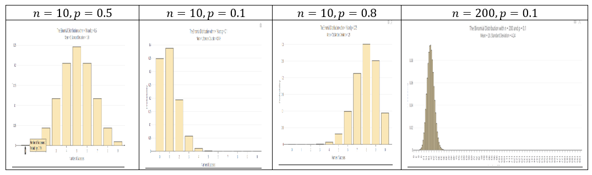

2.3 Binomial Distribution
2.3.1 Objectives
By the end of this unit, students will be able to:
- Identify when the conditions apply for the Binomial distribution to be used.
- Apply the Binomial distribution to model counts resulting from binary trials.
2.3.2 Overview
Binomial Distribution Condition
Conditions to be satisfied for a Binomial Variable Distribution with a fixed number of trials \(n\):
- The trials are independent
- Each trial has two possible outcomes classified as success or failure
- The probability of a success \(p\) is the same for each trial
Probability Mean and Standard Deviation
For a binomial random variable \(X\) with \(n\) trials and the probability of a single trial being a success \(p\), the probability of observing exactly \(k\) successes is
\[ P(X = k) = \binom{n}{k} p^k (1-p)^{n-k} = \frac{n!}{k!(n-k)!} p^k (1-p)^{n-k} \quad (k = 0, 1, \ldots, n) \]
Where: - \(n! = 1 \times 2 \times \cdots \times n\) - \(0! = 1\) - \(\binom{n}{k} = \frac{n!}{k!(n-k)!}\) (read as “n choose k”, also called the combination coefficient)
The probability of at most \(k\) successes is given by \[\displaystyle{\mathbb{P}\left[X \leq k\right] = \sum_{i=0}^{k}{\binom{n}{i}\cdot p^i\left(1 - p\right)^{n-i}} \approx \tt{pbinom(k, n, p)}}\]
In the equations above, \(\binom{n}{k} = \frac{n!}{k!\left(n-k\right)!}\) counts the number of ways to arrange the \(k\) successes amongst the \(n\) trials. That being said, the R functionality, dbinom() and pbinom() allow us to bypass the messy formulas – but you’ll still need to know what these functions do in order to use them correctly!
Tip: We need to use the binomial distribution to find probabilities associated with numbers of successful (or failing) outcomes in which we do not know for certain the trials on which the successes (or failures) occur
Mean: \(\mu = np\)
Standard deviation: \(\sigma = \sqrt{np(1-p)}\)
Observations that are more than 2 standard deviations away from the mean are considered unusual:
Unusual if outside of \(\mu - 2\sigma\) and \(\mu + 2\sigma\)
Shape of Binomial Distribution
- For \(p < 0.5\): skew to the left
- For \(p > 0.5\): skew to the right
- For \(p = 0.5\): symmetric (centered at \(\mu\))
- For large \(n\), if \(np \geq 10\) and \(n(1-p) \geq 10\), the graph is approximately bell-shaped.

(Generated using online app https://istats.shinyapps.io/BinomialDist/)
Using R
For \(P(X = k)\):
dbinom(k, n, p)For \(P(X \leq k) = P(X < k+1) = P(X = 0) + P(X = 1) + \cdots + P(X = k)\):
pbinom(k, n, p, lower.tail = TRUE)(thelower.tail = TRUEcan be omitted)For \(P(X > k) = P(X \geq k+1) = 1 - P(X \leq k) = P(X = k+1) + \cdots + P(X = n)\):
pbinom(k, n, p, lower.tail = FALSE)For \(n!\):
factorial(n)For \(\binom{n}{k}\):
choose(n, k)
Using Calculator
- For \(P(X = x)\):
2ND→VARS(DISTR) → use arrow to selectbinompdf(enter \(n\), \(p\), \(x\)) thenenter
- For \(P(X \leq x)\):
2ND→VARS(DISTR) → use arrow to selectbinomcdf(enter \(n\), \(p\), \(x\)) thenenter
- For \(n!\):
- Example: \(7!\)
- Enter 7 then press
Mathkey; use (right) arrow key to selectPROBthen use (down) arrow key to select!(press enter it then shows7!); press theenterkey again (to get answer 5040)
- For \(\binom{n}{k}\):
- Example: \(\binom{9}{2}\)
- Enter 9 then
MATH→ arrow toPROB→ choosenCrthen enter 2 thenenterto get the result (answer is 36)
2.3.4 Exercises
Exercise 1. How many ways can we choose 2 students from a group of 6?
Exercise 2 (Combination Formula)
Survey four randomly selected students and record the outcomes as “I” (in state) or “O” (out state). Fill the table below.
| # of “I” | Outcomes (list all) | # of outcomes | \(\binom{4}{k} = \frac{4!}{k!(4-k)!}\) |
|---|---|---|---|
| \(k = 0\) | |||
| \(k = 1\) | |||
| \(k = 2\) | |||
| \(k = 3\) | |||
| \(k = 4\) |
Exercise 3 Find the probability of success of the Bernoulli trial with \(n\) trials, success probability \(p\), and the success \(k\):
- \(n = 3\), \(k = 2\), \(p = 0.35\)
- \(n = 5\), \(k = 3\), \(p = 0.2\)
Exercise 4
For a binomial distribution with \(n = 4\), \(p = 0.7\). (As in exercise 1, assume that 70% are in-state students.)
(a). Write the formula for computing the probability of getting exactly \(k\) successes.
(b). Fill the following distribution table. (Round to 4 decimals) (you may use R calculator)
| \(X\) | \(P(X = k)\) | \(P(X \leq k)\) |
|---|---|---|
| 0 | ||
| 1 | ||
| 2 | ||
| 3 | ||
| 4 | 1 | |
| Total | 1 |
(c). What is the expected value?
(d). What is the standard deviation?
Exercise 5
About 75% of dog owners buy holiday presents for their dogs. Suppose twenty dog owners are randomly selected, find the probability of:
(a). Exactly three buy their dog holiday presents
(b). Exactly seventeen do not buy their dog holiday presents
(c). Three or more buy their dog holiday presents
(d). At most four buy their dog holiday presents
(e). Minimum of 11 and maximum of 17 dog owners buy their dog holiday presents
(f). Find the expected number of dog owners in this sample, who buy their dog holiday presents.
(g). Is it unusual if 16 out of 20 randomly selected dog owners buy their dog holiday presents? Why?
(h). Is it unusual if 10 out of 20 randomly selected dog owners buy their dog holiday presents? Why?
\(\underline{\textbf{Review on Binomial Distribution}}\)
Conditionsto be satisfied for a Binomial Variable Distribution:
\(\bullet \ \ \text{The number of trials,is a fixed positive integer}\)
\(\bullet \ \ \text{The trials are independent}\)
\(\bullet \ \ \text{Each trail has two possible outcomes, classified as success or failure}\)
\(\bullet \ \ \text{The probability of a success, p, is the same for each trial}\)
Binomial Distribution
For a binomial random variable with trials and the probability of a single trial being a success the probability of observing exactly successes is
\(P(X =k) = \binom nkp^k(1-p)^{n-k}=\frac{n!}{k! (n-k)!}p^k(1-p)^{n-k} \text{ k= 0,1, ..., n}\)
Accumulative Probability
(at most k success) \(P(X\le k)=P(X <k+1)=\sum_{i=0}^{k}P(X=i)\)
(at least k success) \(P(X\ge k)=P(X>k-1)=1-P(X\le k-1)=\sum_{i=k}^n P(X=i)\)
\(\underline{\textbf{Factorial and Combination Coefficient}}\)
n! = \(1 \times 2 \times ... \times n\) 0! = 1
\(\binom nk = \frac{n!}{k!(n-k)!}\) (\(\binom nk\) is read as “n choose k”)
Solution:
Exercise 1. How many ways can we choose 2 students from a group of 6?
## [1] 15Exercise 4. For a binomial distribution with n=4,p=0.2.
a) Write the formula for computing the probability of getting exactly k successes.
\(P(X =k) = \binom nkp^k(1-p)^{n-k}=\frac{n!}{k! (n-k)!}p^k(1-p)^{n-k} \text{ k= 0,1, ..., n}\)
In R you use dbinom(k,n,p)
b) Fill the following distribution table. (Round to 4 decimals) (you may use R calculator)
## [1] 0.4096 0.4096 0.1536 0.0256 0.0016## [1] 0.4096 0.8192 0.9728 0.9984 1.0000c) What is the expected value?
## [1] 0.8d) What is the standard deviation?
## [1] 0.8Exercise 5. About 75% of dog owners buy holiday presents for their dogs. Suppose twenty dog owners are randomly selected, find the probability of a) Exactly three buy their dog holiday presents
\[P(X=3)\]
## [1] 2.799425e-08b) Exactly seventeen do not buy their dog holiday presents
\[P(X=17)\]
## [1] 2.799425e-08c) Three or more buy their dog holiday presents
\[P(X\ge 3)=1-P(X \le 3)\]
## [1] 1## [1] 1d) At most four buy their dog holiday presents
\[P(X\ge 4)=P(X = 0)+...+P(X=4)\]
## [1] 3.865316e-07## [1] 3.865316e-07e) Minimum of 11 and maximum of 17 dog owners buy their dog holiday presents
\[P(11 \le X \le 17)\]
## [1] 0.8948752f) Find the expected number of dog owners in this sample, who buy their dog holiday presents
## [1] 15g) Is it unusual if 16 out of 20 randomly selected dog owners buy their dog holiday presents? Why?
## [1] 0.1896855
Comment
Whether it’s unusual depends on your chosen significance level. If you consider a low probability (e.g., p<0.05) as unusual, then it might be considered unusual.
Is it unusual if 10 out of 20 randomly selected dog owners buy their dog holiday presents? Why?
## [1] 0.009922275
Comment
Whether it’s unusual depends on your chosen significance level. If you consider a low probability as unusual, then it might be considered unusual.